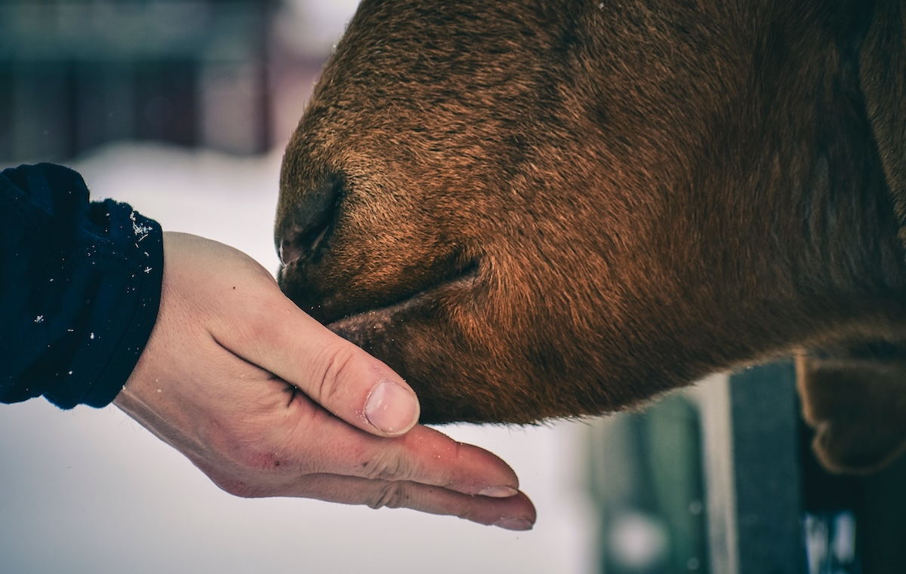

Hindus never needed therapy or counselling for mental health. That is because Hindus lived with the cow. The cow was all the therapy we needed. The book "Cownomics" outlines how the cow was not just instrumental in us maintaining our mental health and sanity, but also a direct, clean path to enlightenment. What's intriguing is that the western world is waking up to this fact now as well.

Photo by Chris F from PexelsSignificant Reduction in Depression on Interacting with Cows
In a recent randomized control trial [1], participants were allowed to interact with cows in cowshed of their own volition. They were randomly assigned to "treatment" or "control" groups. At the end of the experiment, a siginificant reduction in clinical depression and an increase in self efficacy was found. This is called "green care" by the scientists, and has shown promise in the case of people suffering with different types of depression.
In another study amongst children [2], the children were allowed to interact with farm animals. It was found that children interacted with animals in the same way that they would interact with a therapist! They spoke to animals, shared their innermost thougths and visited animals when they were upset or angry in order to feel better. The farm animals, like the cow, served the purpose of "co-therapist" for these children. The research suggests a novel approach to helping children which has not yet been explored much.
Image by sippakorn yamkasikorn from Pixabay
Yet another qualitative study [3] documented the experiences of participants who utilized animal-assisted therapy for dealing with clinical depression. The participants reported a positive changes due to their interactions. The study suggests that animal-assisted therapy can be a supplement for rehabilitation for patients with clinical depression.
Ancient Wisdom
Ancient wisdom from Hindu texts goes further. Upanishads gave the "cheat code" for mental health thousands of years ago. Caring for the cows, interacting with cows and spending time with cows is highlighted as an essential part of a child's education. It is the pathway to emotional stability and feeling empowered to deal with the tribulations of life. It allows a being to mature and cherish higher ideals and higher truths as a part of their everyday life. Only a person who is not shaken with everyday happenings has the capacity to nurture higher truths of cosmic existence as a part of their way of life. This is why crimes against cows were considered sacrilegous. The cow was a sacred animal as it allowed humans to achieve higher states of existence merely by spending time with the cow and caring for it. Mental health is a small side effect of this habit which the Upanishads ask readers to inculcate.
Cover Photo by cottonbro from Pexels
References:
[1] Farm Animal-Assisted Intervention for People with Clinical Depression: A Randomized Controlled Trial